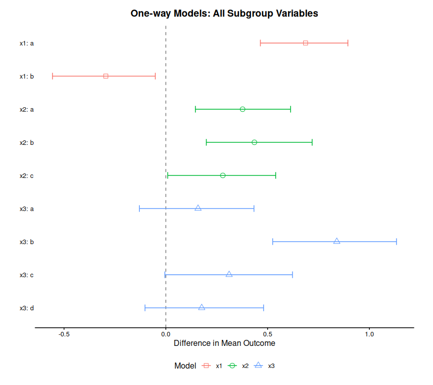
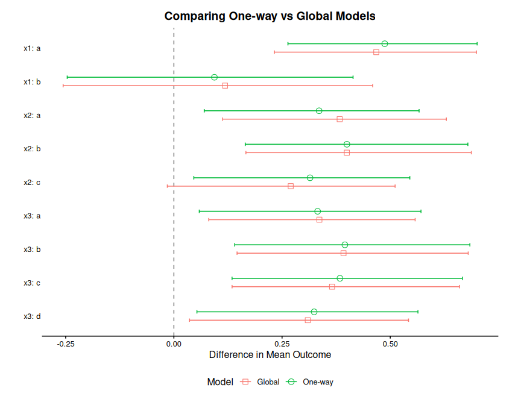

Quickstart
Miriam Pedrera Gomez, Isaac Gravestock, and Marcel Wolbers
Source:vignettes/Quickstart.Rmd
Quickstart.Rmd1 Introduction
The bonsaiforest2 package consists of 3 core functions which are typically called in sequence:
-
run_brms_analysis()- Prepares the model formula and fits the Bayesian model usingbrms. -
summary_subgroup_effects()- Calculates the marginal subgroup treatment effects. -
plot()- Creates a forest plot from the summary object.
The package enables the implementation of both global models (Wolbers et al. 2025), that estimate all prognostic and predictive effects in a single unified model using colon notation (e.g., ~ 0 + trt:subgroup), and one-way models (Wang et al. 2024), that estimate treatment slopes varying by subgroup using random effects notation (e.g., ~ (0 + trt || subgroup)).
This vignette demonstrates how to use the package to fit and compare these different modeling formulas. You’ll learn how to:
- Fit one-way models (random effects with treatment slopes varying by subgroup)
- Fit global models (all subgroup variables in one unified model)
- Generate summaries of subgroup treatment effects
- Visualize and compare results from different model specifications
This example makes use of Bayesian modeling, which requires the installation of the brms package and a working Stan installation (e.g., via cmdstanr).
2 The Data
We will use a simulated example dataset with a continuous response variable. The relevant outcome is y.
We consider a model where we want to find the treatment effect (trt) on y. The model will adjust for baseline as a prognostic variable (predictor of the outcome) and explore multiple subgroup variables as predictive variables (potential treatment effect modifiers):
-
X1: Subgroup 1 (categories: A, B, C) -
X2: Subgroup 2 (categories: A, B) -
X3: Subgroup 3 (categories: A, B, C) -
X4: Subgroup 4 (categories: A, B) -
X5: Subgroup 5 (categories: A, B)
First, let’s load the libraries and create the data.
# Load the main package
library(bonsaiforest2)
library(brms)
# Create the example data with multiple subgroup variables and treatment effects
set.seed(123)
n <- 500
data <- data.frame(
id = 1:n,
trt = rep(0:1, length.out = n), # Numeric treatment 0/1
baseline = rnorm(n, mean = 100, sd = 15),
X1 = factor(sample(c("A", "B", "C"), n, replace = TRUE)),
X2 = factor(sample(c("A", "B"), n, replace = TRUE)),
X3 = factor(sample(c("A", "B", "C"), n, replace = TRUE)),
X4 = factor(sample(c("A", "B"), n, replace = TRUE)),
X5 = factor(sample(c("A", "B"), n, replace = TRUE))
)
# Generate outcome with baseline effect and heterogeneous treatment effects
data$y <- 50 +
0.2 * data$baseline +
data$trt * (-5 + # Base treatment effect
2 * (as.numeric(data$X1 == "A") - 0.33) + # Heterogeneity by X1
1.5 * (as.numeric(data$X3 == "B") - 0.33) # Heterogeneity by X3
) +
rnorm(n, 0, 10)
print(head(data))
#> id trt baseline X1 X2 X3 X4 X5 y
#> 1 1 0 91.59287 A B C B A 63.61448
#> 2 2 1 96.54734 B B C B B 70.01582
#> 3 3 0 123.38062 C A B A B 51.31665
#> 4 4 1 101.05763 B B C A B 75.00897
#> 5 5 0 101.93932 C A C B A 54.71636
#> 6 6 1 125.72597 A B C B B 71.209513 One-way Models
This section demonstrates how to fit separate models, each examining one subgroup variable at a time. In one-way models, we specify treatment effects as random slopes using pipe-pipe notation (e.g., ~ (0 + trt || subgroup)), which allows treatment effects to vary by subgroup with automatic hierarchical regularization via random effects.
3.1 One-way Model: X1 Only
# Fit model with only X1 as subgroup variable using one-way approach
# Random effects notation (0 + trt || X1) estimates varying treatment slopes by X1
oneway_X1 <- run_brms_analysis(
data = data,
response_type = "continuous",
response_formula = y ~ trt,
unshrunk_terms_formula = ~ baseline,
shrunk_prognostic_formula = NULL,
shrunk_predictive_formula = ~ (0 + trt || X1),
intercept_prior = "normal(0, 10)",
unshrunk_prior = "normal(0, 2.5)",
shrunk_predictive_prior = set_prior("normal(0, 1)", class = "sd"),
chains = 2, iter = 2000, warmup = 1000, cores = 2,
refresh = 0, backend = "cmdstanr"
)
#> Running MCMC with 2 parallel chains...
#>
#> Chain 1 finished in 3.1 seconds.
#> Chain 2 finished in 3.4 seconds.
#>
#> Both chains finished successfully.
#> Mean chain execution time: 3.3 seconds.
#> Total execution time: 3.5 seconds.
summary_oneway_X1 <- summary_subgroup_effects(brms_fit = oneway_X1)
print(summary_oneway_X1)
#> $estimates
#> # A tibble: 3 × 4
#> Subgroup Median CI_Lower CI_Upper
#> <chr> <dbl> <dbl> <dbl>
#> 1 X1: A -3.39 -5.31 -1.20
#> 2 X1: B -3.80 -5.79 -1.72
#> 3 X1: C -4.91 -7.29 -2.84
#>
#> $response_type
#> [1] "continuous"
#>
#> $ci_level
#> [1] 0.95
#>
#> $trt_var
#> [1] "trt"
#>
#> attr(,"class")
#> [1] "subgroup_summary"3.2 One-way Model: X2 Only
oneway_X2 <- run_brms_analysis(
data = data,
response_type = "continuous",
response_formula = y ~ trt,
unshrunk_terms_formula = ~ baseline,
shrunk_prognostic_formula = NULL,
shrunk_predictive_formula = ~ (0 + trt || X2),
intercept_prior = "normal(0, 10)",
unshrunk_prior = "normal(0, 2.5)",
shrunk_predictive_prior = set_prior("normal(0, 1)", class = "sd"),
chains = 2, iter = 2000, warmup = 1000, cores = 2,
refresh = 0, backend = "cmdstanr"
)
#> Running MCMC with 2 parallel chains...
#>
#> Chain 2 finished in 3.0 seconds.
#> Chain 1 finished in 3.2 seconds.
#>
#> Both chains finished successfully.
#> Mean chain execution time: 3.1 seconds.
#> Total execution time: 3.3 seconds.
summary_oneway_X2 <- summary_subgroup_effects(brms_fit = oneway_X2)3.3 One-way Model: X3 Only
oneway_X3 <- run_brms_analysis(
data = data,
response_type = "continuous",
response_formula = y ~ trt,
unshrunk_terms_formula = ~ baseline,
shrunk_prognostic_formula = NULL,
shrunk_predictive_formula = ~ (0 + trt || X3),
intercept_prior = "normal(0, 10)",
unshrunk_prior = "normal(0, 2.5)",
shrunk_predictive_prior = set_prior("normal(0, 1)", class = "sd"),
chains = 2, iter = 2000, warmup = 1000, cores = 2,
refresh = 0, backend = "cmdstanr"
)
#> Running MCMC with 2 parallel chains...
#>
#> Chain 2 finished in 3.2 seconds.
#> Chain 1 finished in 3.5 seconds.
#>
#> Both chains finished successfully.
#> Mean chain execution time: 3.3 seconds.
#> Total execution time: 3.5 seconds.
summary_oneway_X3 <- summary_subgroup_effects(brms_fit = oneway_X3)3.4 One-way Model: X4 Only
oneway_X4 <- run_brms_analysis(
data = data,
response_type = "continuous",
response_formula = y ~ trt,
unshrunk_terms_formula = ~ baseline,
shrunk_prognostic_formula = NULL,
shrunk_predictive_formula = ~ (0 + trt || X4),
intercept_prior = "normal(0, 10)",
unshrunk_prior = "normal(0, 2.5)",
shrunk_predictive_prior = set_prior("normal(0, 1)", class = "sd"),
chains = 2, iter = 2000, warmup = 1000, cores = 2,
refresh = 0, backend = "cmdstanr"
)
#> Running MCMC with 2 parallel chains...
#>
#> Chain 1 finished in 3.4 seconds.
#> Chain 2 finished in 3.7 seconds.
#>
#> Both chains finished successfully.
#> Mean chain execution time: 3.5 seconds.
#> Total execution time: 3.8 seconds.
summary_oneway_X4 <- summary_subgroup_effects(brms_fit = oneway_X4)3.5 One-way Model: X5 Only
oneway_X5 <- run_brms_analysis(
data = data,
response_type = "continuous",
response_formula = y ~ trt,
unshrunk_terms_formula = ~ baseline,
shrunk_prognostic_formula = NULL,
shrunk_predictive_formula = ~ (0 + trt || X5),
intercept_prior = "normal(0, 10)",
unshrunk_prior = "normal(0, 2.5)",
shrunk_predictive_prior = set_prior("normal(0, 1)", class = "sd"),
chains = 2, iter = 2000, warmup = 1000, cores = 2,
refresh = 0, backend = "cmdstanr"
)
#> Running MCMC with 2 parallel chains...
#>
#> Chain 2 finished in 3.5 seconds.
#> Chain 1 finished in 3.7 seconds.
#>
#> Both chains finished successfully.
#> Mean chain execution time: 3.6 seconds.
#> Total execution time: 3.8 seconds.
summary_oneway_X5 <- summary_subgroup_effects(brms_fit = oneway_X5)3.6 One-way Models: Visualizing All Models
You can combine and visualize results from multiple models using combine_summaries():
# Combine all one-way models
combined_oneway <- combine_summaries(list(
"X1" = summary_oneway_X1,
"X2" = summary_oneway_X2,
"X3" = summary_oneway_X3,
"X4" = summary_oneway_X4,
"X5" = summary_oneway_X5
))
plot(combined_oneway, title = "One-way Models: All Subgroup Variables")
#> Preparing data for plotting...
#> Generating plot...
#> Done.
4 Global Model
This section demonstrates how to fit a single model that includes all subgroup variables simultaneously using the global approach. All treatment-by-subgroup interactions are estimated in one unified model with colon notation (e.g., ~ 0 + trt:subgroup) and strong regularization (Horseshoe prior) applied to the interaction terms.
4.1 Global Model: All Subgroups
# Fit a single unified model with ALL subgroup variables simultaneously using global approach
# - Unshrunk terms: baseline with reference coding
# - Shrunk prognostic effects: subgroup main effects with strong regularization using one-hot encoding
# - Shrunk predictive effects: treatment interactions with strong regularization using one-hot encoding
global_shrinkage_model <- run_brms_analysis(
data = data,
response_type = "continuous",
response_formula = y ~ trt,
unshrunk_terms_formula = ~ baseline,
shrunk_prognostic_formula = ~ 0 + X1 + X2 + X3 + X4 + X5,
shrunk_predictive_formula = ~ 0 + trt:X1 + trt:X2 + trt:X3 + trt:X4 + trt:X5,
intercept_prior = "normal(0, 10)",
unshrunk_prior = "normal(0, 2.5)",
shrunk_prognostic_prior = "horseshoe(scale_global = 1)",
shrunk_predictive_prior = "horseshoe(scale_global = 0.5)",
chains = 2, iter = 2000, warmup = 1000, cores = 2,
refresh = 0, backend = "cmdstanr"
)
#> Running MCMC with 2 parallel chains...
#>
#> Chain 2 finished in 8.5 seconds.
#> Chain 1 finished in 9.1 seconds.
#>
#> Both chains finished successfully.
#> Mean chain execution time: 8.8 seconds.
#> Total execution time: 9.2 seconds.4.2 Global Model: Summary of Subgroup Effects
Use summary_subgroup_effects() to generate marginal treatment effects for each subgroup. The function automatically extracts all treatment interactions from the fitted model:
global_summary <- summary_subgroup_effects(brms_fit = global_shrinkage_model)
#> --- Calculating specific subgroup effects... ---
#> Step 1: Identifying subgroups and creating counterfactuals...
#> ...detected subgroup variable(s): X1, X2, X3, X4, X5
#> Step 2: Generating posterior predictions...
#> Step 3: Calculating marginal effects...
#> Done.
# Print the summary of subgroup-specific treatment effects
print(global_summary)
#> $estimates
#> # A tibble: 12 × 4
#> Subgroup Median CI_Lower CI_Upper
#> <chr> <dbl> <dbl> <dbl>
#> 1 X1: A -3.66 -5.75 -1.47
#> 2 X1: B -3.84 -5.86 -1.77
#> 3 X1: C -4.96 -7.50 -2.90
#> 4 X2: A -4.21 -6.22 -2.32
#> 5 X2: B -4.09 -6.12 -2.20
#> 6 X3: A -4.71 -7.22 -2.52
#> 7 X3: B -3.91 -6.01 -1.67
#> 8 X3: C -3.92 -5.94 -1.83
#> 9 X4: A -4.19 -6.09 -2.31
#> 10 X4: B -4.10 -6.16 -2.26
#> 11 X5: A -4.18 -6.20 -2.35
#> 12 X5: B -4.14 -6.04 -2.26
#>
#> $response_type
#> [1] "continuous"
#>
#> $ci_level
#> [1] 0.95
#>
#> $trt_var
#> [1] "trt"
#>
#> attr(,"class")
#> [1] "subgroup_summary"5 Comparing Multiple Models in One Plot
The plot() function supports comparing multiple models side-by-side. Pass a named list of subgroup_summary objects to create a comparative forest plot.
5.1 Example: Comparing One-way vs Global Models
# Combine summaries for comparison
combined <- combine_summaries(list(
"One-way" = combined_oneway,
"Global" = global_summary
))
# Plot the comparison
plot(combined, title = "Comparing One-way vs Global Models")
#> Preparing data for plotting...
#> Generating plot...
#> Done.